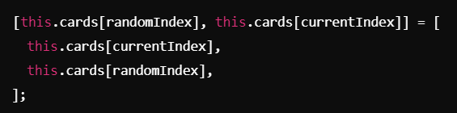

Vamos quebrar tudo em pedaços pequenos e fáceis para entender como o jogo funciona.
Quando o jogo começa, a função startGame é chamada. Ela faz coisas como:
A função initializeCards pega todas as cartas que o jogo criou e coloca na tela. Cada carta é um bloco div, e cada uma tem duas "faces":
A função flipCard é chamada sempre que clicamos em uma carta. Primeiro, ela verifica se podemos virar a carta (usando a função game.setCard). Depois de virar, verifica:
O jogo também mede quanto tempo você levou para terminar e salva seu recorde no navegador usando localStorage.
A função primeiro verifica se existem duas cartas selecionadas (this.firstCard e this.secondCard). Se uma delas for null, retorna false porque não há duas cartas para comparar.
Se as duas cartas foram selecionadas, a função compara o valor da propriedade icon de ambas as cartas:
currentIndex começa com o tamanho total do array de cartas (this.cards.length).
Para cada posição no array, a função calcula um índice aleatório dentro do intervalo restante:
As cartas na posição atual (currentIndex - 1) e na posição aleatória (randomIndex) são trocadas de lugar:
currentIndex--: Reduz o índice atual, movendo-se para a próxima posição do array.